Mac: Task History — light
web-tasks-light.png
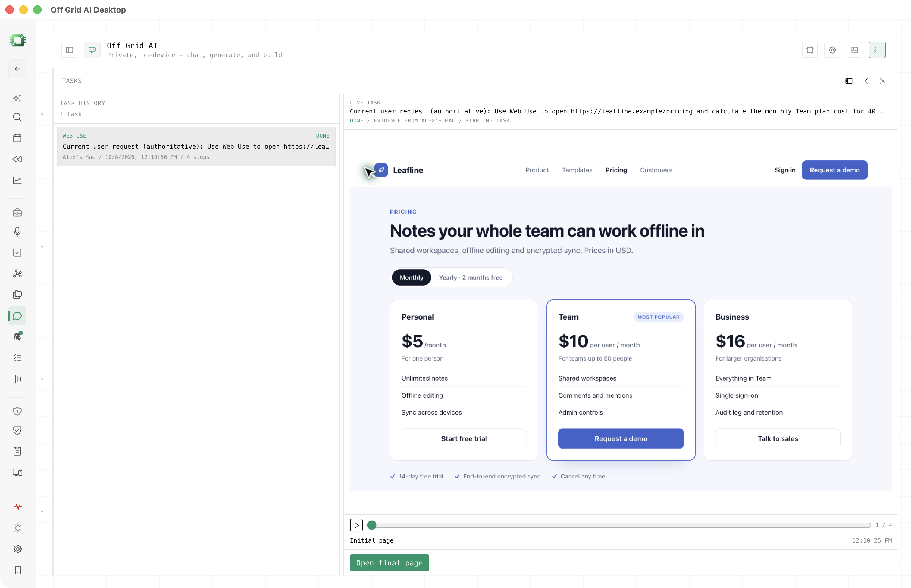
18 selected PNG files, in light and dark themes. Mac: 3024 × 1954. iPhone: 1320 × 2868. Native captures of the real app, using synthetic Leafline pricing data.
Team: $10 per user per month × 40 users = $400 per month. OGAD’s cursor is allowed; external cursors are excluded.
Full file list, capture counts and limitations
The Mac comparison table has cramped app formatting. The dark Mac plan and progress use the same frame. The live theme variants show different task steps. Sign-in was omitted as requested. Older phone plan files and raw sequences are excluded from this selection.
web-tasks-light.png

web-tasks-dark.png
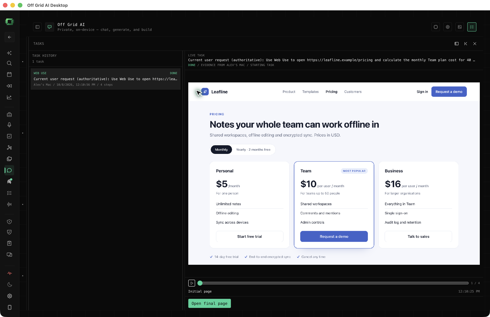
web-plan-light.png
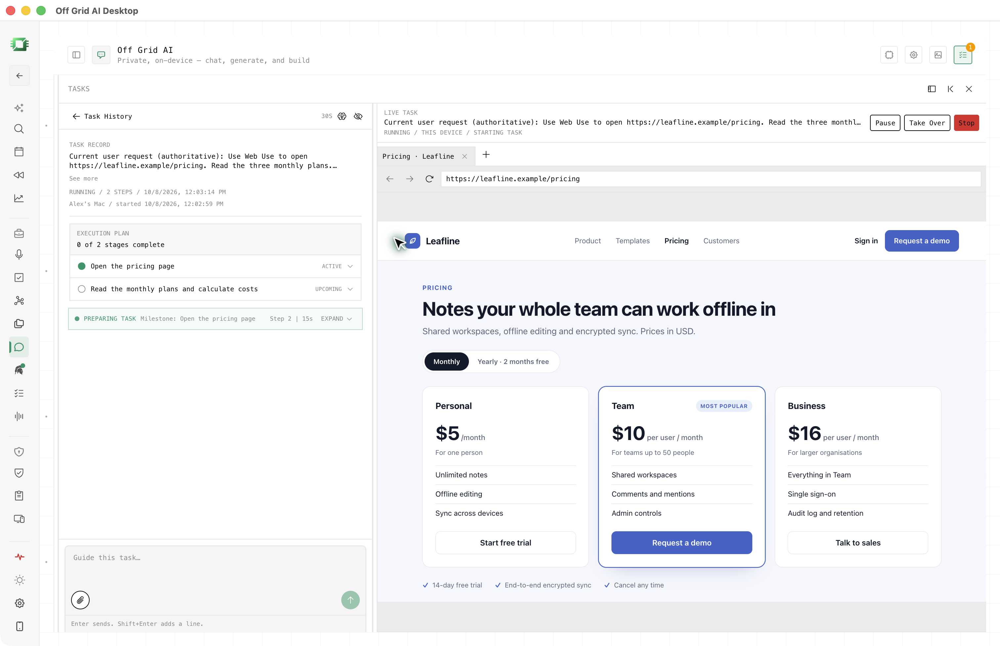
web-plan-dark.png
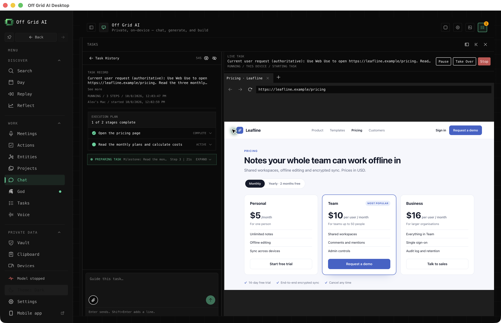
web-step-light.png
web-step-dark.png

web-compare-light.png
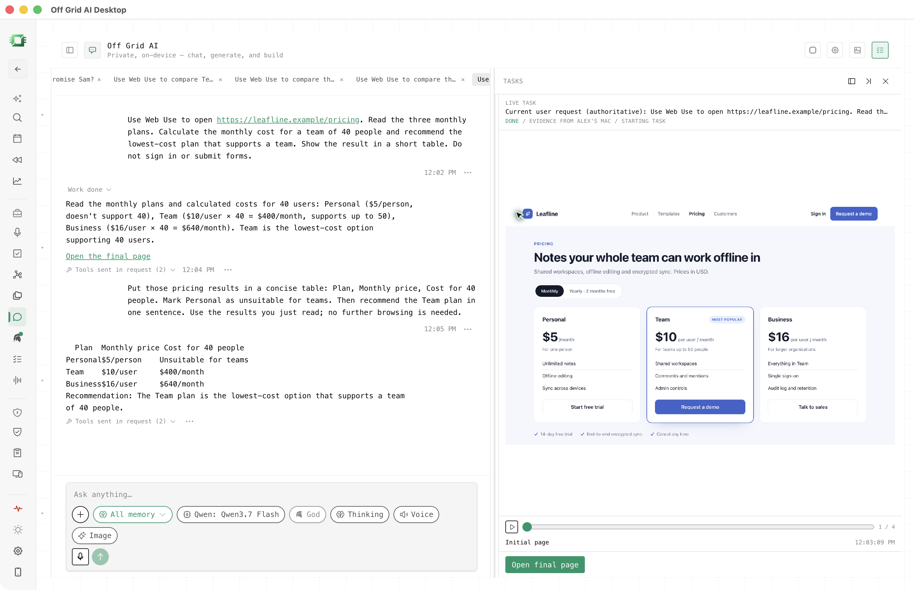
web-compare-dark.png
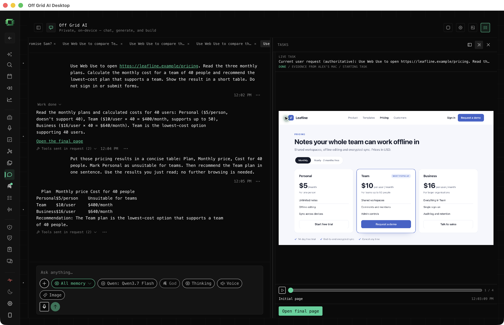
web-done-light.png
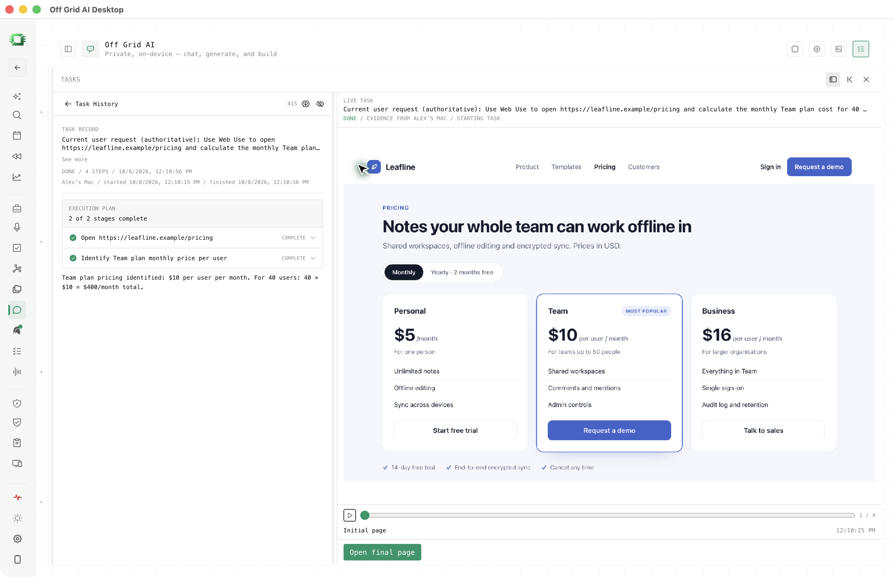
web-done-dark.png
phone-web-step-light.png
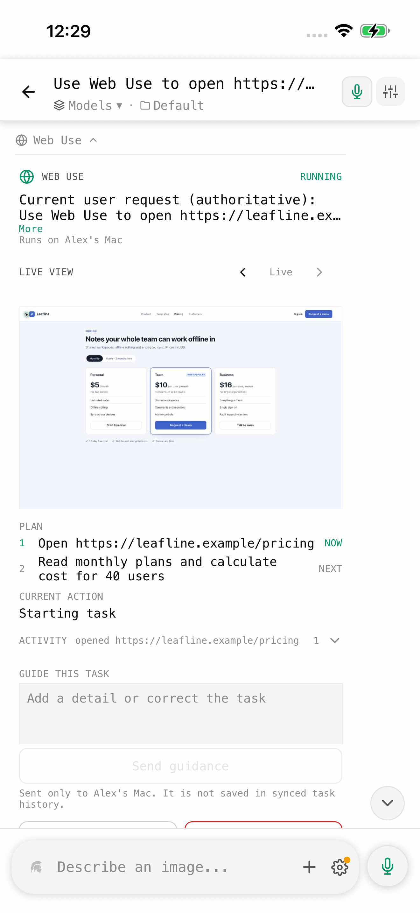
phone-web-step-dark.png
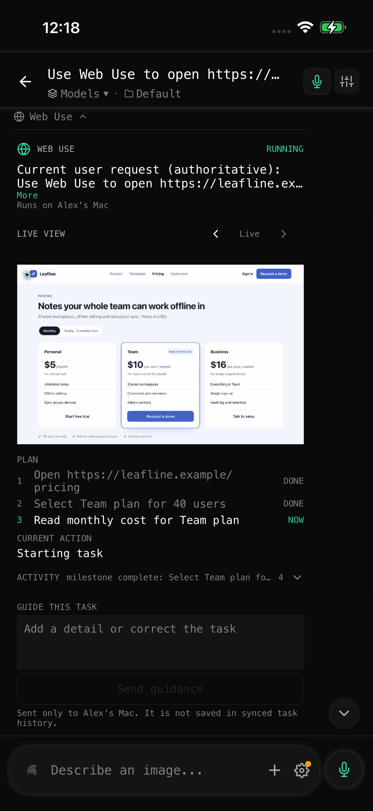
phone-web-compare-light.png
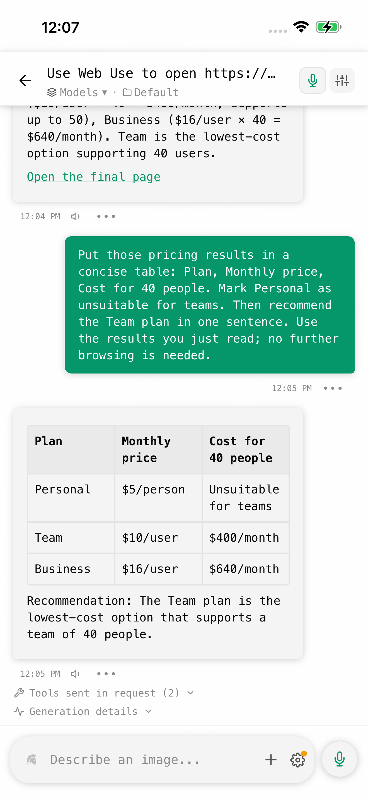
phone-web-compare-dark.png
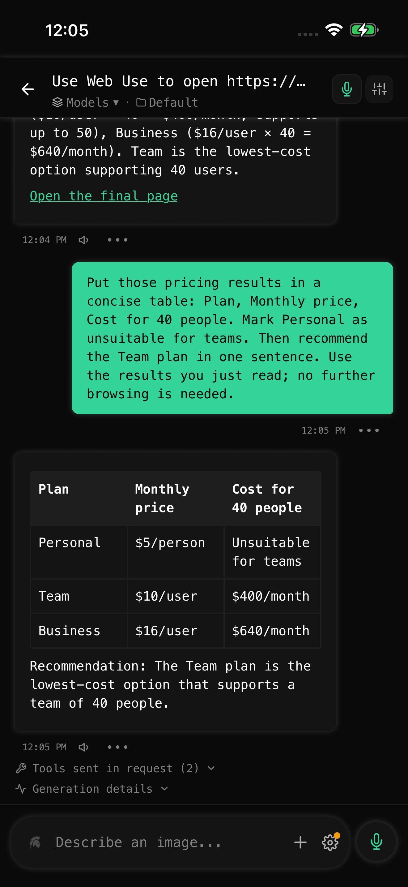
phone-web-done-light.png
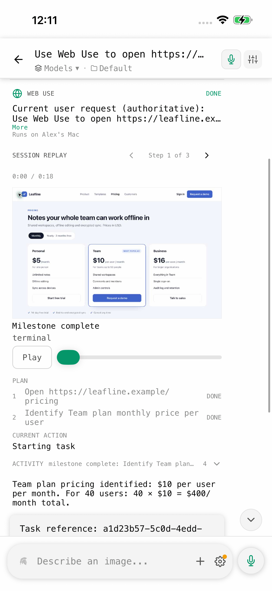
phone-web-done-dark.png
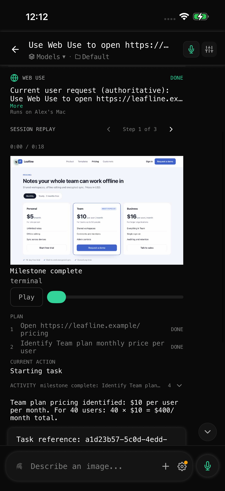
phone-web-replay-light.png
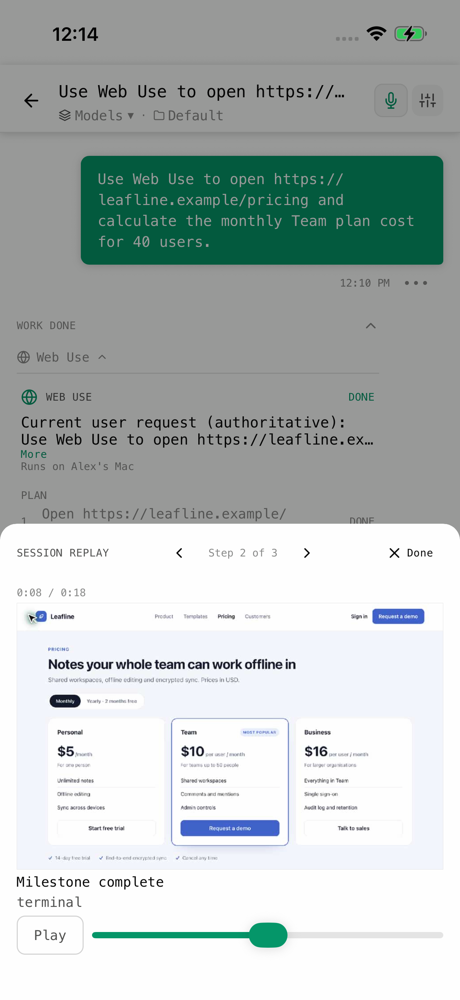
phone-web-replay-dark.png
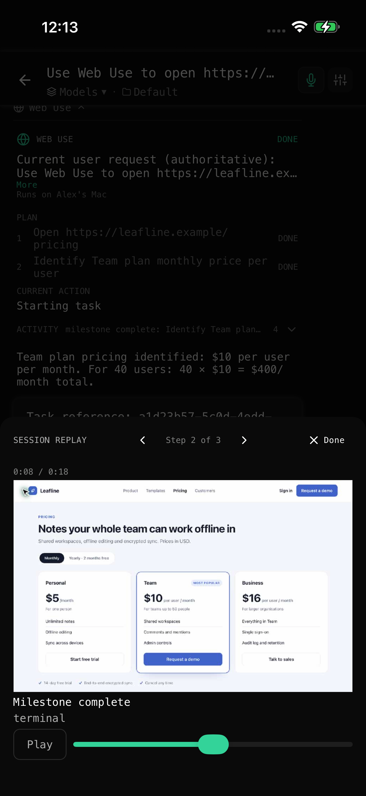